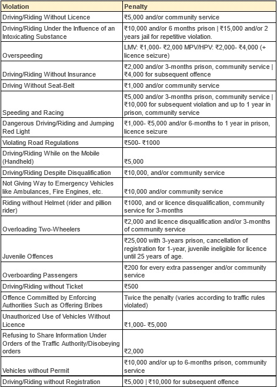

"I crashed because I was speeding, but my seat belt was my saviour"
Akshat Gupta, 32, was speeding when a crash snapped his commute. He is narrating the story himself, only because he was wearing a Seat Belt, which saved his life. Watch his story here. We hope this can motivate us all enough to make Delhi roads safer, together. #SadakSurakshitDilliSurakshit
CHECK US OUT ON SOCIAL MEDIA:
TWITTER
FACEBOOK
Learn and Spread Awareness
Obey the laws.
In accordance with the Safe Systems Approach, where we believe that lives is more about having a better system, such as safer roads that minimise crashes, adopting safe speeds and with a vision of attaining “Zero fatalities” in road crashes, the Delhi government has been rolling, out a flurry of measures, including the substantial increment in fines for various road offences.
- The Delhi Government has substantially increased the fines for speeding, rash driving,
and drink-driving in the national capital to deter motorists from flouting traffic
rules.
- As per the Motor Vehicles Amendment Act, 2019, there has been a 10-fold increase in
fines against speeding in Delhi and likewise, all other fines have been escalated, along
with the jail terms.
- Besides, for some offences, even your licence can get impounded and in some cases, your
vehicle will be seized.
MESSAGE
Taking care of some small, simple things while driving can greatly enhance your safety and that of your loved ones, and it will help us achieve the “Zero Fatalities” target.
Road Safety Initiative
The Department of Transport, Government of NCT, is committed to a comprehensive, data-driven approach to road safety as part of Vision Zero With the ultimate aim to reduce the number of deaths and serious injuries on our roads, we consider strong, evidence-based public education campaigns as a key strategy to raise awareness, and overtime change perceptions, attitudes and behaviours pertaining to the key risk factors of speeding, drink driving, lack of proper helmet use and lack of seat-belt use. Communication campaigns, when paired with enforcement of traffic laws, has been proven to save lives. A strong social media presence in addition can help form strong online communities to amplify messages and support this vision.
For more information on public campaigns please VISIT HERE
#SadakSurakshitDilliSurakshit on Social Media
In the age of social media, the impact of visually appealing content can be relied upon to generate online conversations around change in risk behaviour through sustained dissemination of impactful data, emotional messages, and perils of irresponsible behaviour over roads. As one of strategies to reach the ‘Vision Zero’, Transport Department, through its social media channels, is engaging and educating people on four risk factors - Speeding, Helmet wearing, Seat-belt wearing, and Drink driving.To know more, spread awareness, and to take action, please follow us on:
Twitter @delhiroadsafety
Facebook @delhiroadsafety
Instagram @delhiroadsafety
Helpline Numbers